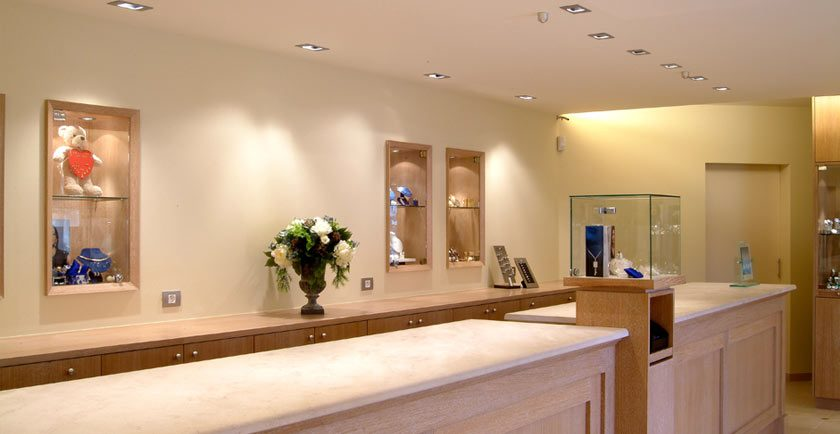
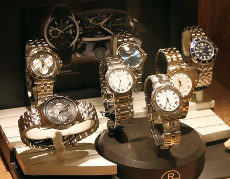

Juwelen
Verlovingsringen, trouwringen, oorbellen, kettingen en meer. Van klassiek tot hedendaags — wij helpen u vinden wat bij u past.
- Verlovings- & trouwringen
- Goud & diamant
- Maatwerk & gravure
Van verlovingsringen tot zelfs een eerste horloge — wij helpen u bij elke gelegenheid met persoonlijk advies en vakmanschap.

Wij combineren vakmanschap met een persoonlijke aanpak — voor elke gelegenheid.

Verlovingsringen, trouwringen, oorbellen, kettingen en meer. Van klassiek tot hedendaags — wij helpen u vinden wat bij u past.

Verkoop en onderhoud van topmerken zoals Raymond Weil, Festina, Candino, Pontiac en The Flanders Collection.
Ringen verkleinen, horlogebanden vervangen, kettingen herstellen — snel en vakkundig in onze eigen atelier.
Geef iets bijzonders met een cadeaubon van Kortrijkse Goudcentrale — geldig op alle juwelen en uurwerken.
Kortrijkse Goudcentrale is al meer dan 40 jaar de vertrouwde juwelier voor Kortrijk en omstreken. Wij geloven dat juwelen en horloges meer zijn dan accessoires — ze vertellen een verhaar, markeren een moment, worden doorgegeven van generatie op generatie.
Onze klanten komen terug om de persoonlijke service, het eerlijke advies en het vakmanschap. Of u nu zoekt naar een verlovingsring, een horloge voor een speciale gelegenheid of gewoon een reparatie nodig heeft — wij staan voor u klaar.
Zeker! U bent altijd welkom tijdens onze openingsuren. Voor een persoonlijk advies over bijvoorbeeld een verlovingsring raden wij wel een korte afspraak aan, zodat we voldoende tijd hebben.
Ja, wij repareren horloges van diverse merken. Neem uw horloge mee en wij geven u een eerlijke prijsinschatting — vrijblijvend.
Dat kan zeker. De meeste ringen kunnen wij in onze eigen atelier aanpassen. De meeste aanpassingen binnen enkele dagen klaar.
Cadeaubonnen kunt u gewoon in de winkel kopen. Neem contact met ons op als u een cadeaubon wilt laten opstellen voor een specifiek bedrag.
We zijn open van dinsdag tot en met zaterdag van 10:00 tot 18:00. Op maandag en zondag zijn wij gesloten.
We zien u graag in onze winkel in het centrum van Kortrijk. Neem gerust contact op voor een afspraak of een vrijblijvend adviesgesprek.